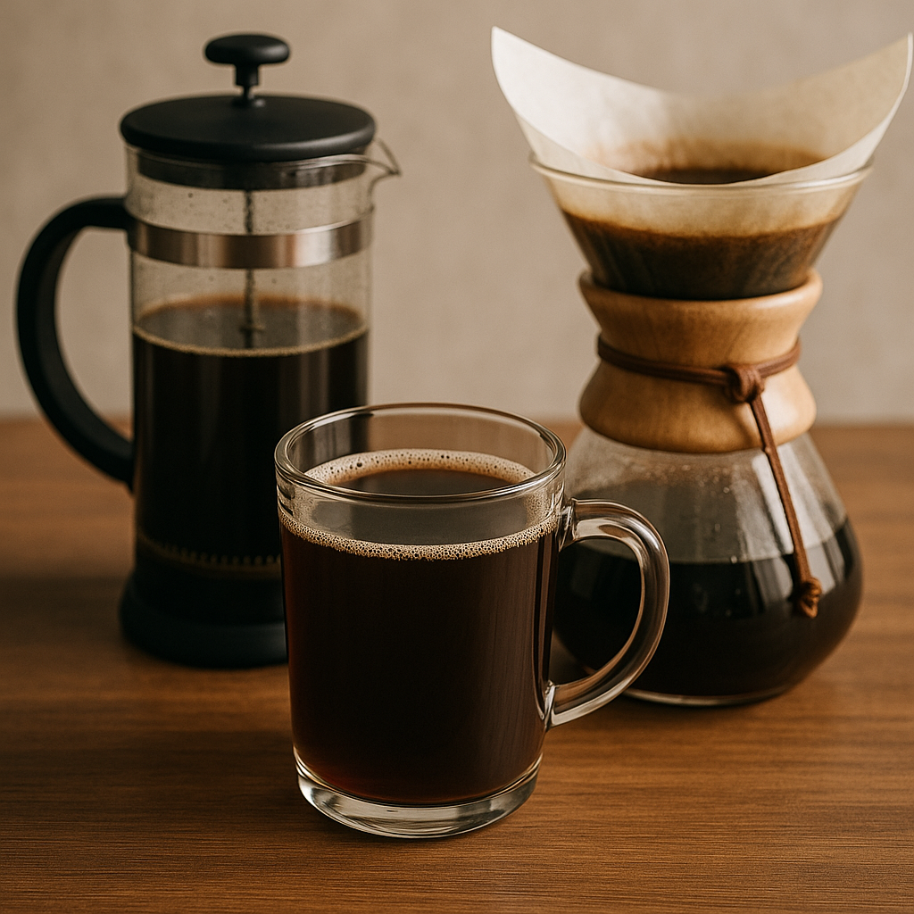

Filtre Kahve
French Press ile evde kolayca filtre kahve hazırlayabilirsiniz. Doğru oran ve adımlarla, zengin aromalı ve berrak bir kahve elde edersiniz.
Hazırlama Süresi
5-7 dakika
Zorluk
Kolay
Porsiyon
2 kişilik
🧾 Malzemeler
- 2 yemek kaşığı (10 g) kalın öğütülmüş kahve (her fincan/180 ml için)
- 180 ml sıcak su (her fincan için, 92–96°C arası)
- İsteğe göre şeker veya süt
🔧 Ekipman
French Press
Kettle
Tartı veya ölçü kaşığı
Karıştırmak için kaşık
Kupa
Hazırlanışı
- French Press'i Isıtın:
French Press'i sıcak suyla çalkalayarak ısıtın. (Kahveyi koymadan önce içindeki suyu dökmeyi unutmayın.) - Kahveyi Ekleyin:
Kalın öğütülmüş kahveyi French Press'e koyun. Her fincan (180 ml) için yaklaşık 2 yemek kaşığı (10 g) kahve kullanın. - Suyu Ekleyin:
Su kaynadıktan sonra 30 saniye bekleyin, ardından French Press'i tamamen doldurun. - Kahveyi Karıştırın:
Kahve tanelerini iyice ıslatın ve bir kaşık yardımıyla nazikçe karıştırın. Bir iki kez karıştırmak yeterlidir. - Demlenmeye Bırakın:
French Press'in kapağını kapatın ve kahvenin demlenmesi için 4 dakika bekleyin. - Pistonu Bastırın:
Pistonu yavaş ve sabit bir şekilde aşağıya doğru itin. Böylece kahve tanelerinden ayrılır. - Servis Edin:
Hazırladığınız kahveyi dilediğiniz kupaya dökün. İsteğe göre şeker veya süt ekleyebilirsiniz. Afiyet olsun!
4 Dakikalık Demleme Zamanlayıcısı
04:00
Püf Noktalar
- Kahve ve su oranını damak tadınıza göre ayarlayabilirsiniz.
- Demleme süresi uzarsa kahve acılaşabilir, 4 dakika idealdir.
- Daha berrak bir kahve için French Press'in filtresini yavaşça bastırın.